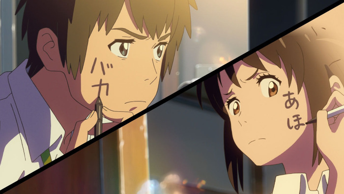
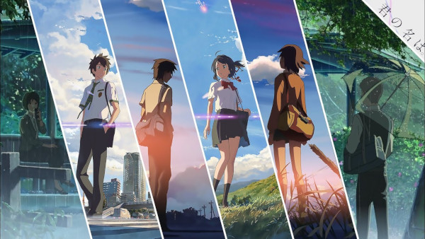

Your name
Sinopse Your name
"Your Name" é um filme de animação japonês que segue a história de dois jovens, Taki e Mitsuha, que misteriosamente começam a trocar de corpo enquanto dormem. Taki vive em Tóquio, enquanto Mitsuha mora em uma pequena cidade rural. Conforme eles tentam lidar com essa estranha mudança, começam a deixar mensagens e notas um para o outro, formando uma conexão especial. No entanto, essa conexão é testada quando um evento catastrófico ameaça separá-los para sempre. O filme combina elementos de romance, drama e fantasia, explorando temas como destino, conexão e amor além do tempo e espaço.
Principais Personagens
- Taki Tachibana
-
Um estudante do ensino médio que vive em Tóquio. Ele é inteligente, trabalhador e tem um forte senso de respon class="nomes-lista"sabilidade. Taki é quem inicialmente começa a trocar de corpo com Mitsuha.
- Mitsuha Miyamizu
-
Uma estudante do ensino médio que vive em uma pequena cidade rural chamada Itomori. Ela é sonhadora, tem uma ligação especial com o santuário xintoísta local e deseja deixar sua vida monótona para trás.
- Hitoha Miyamizu
-
Avó de Mitsuha e sacerdotisa do santuário de família. Ela tem um papel importante na história, pois ajuda a explicar a ligação entre Taki e Mitsuha.
- Sayaka Natori e Tessie
-
Amigos de Taki que o ajudam a lidar com a situação única em que ele se encontra. Sayaka é inteligente e perspicaz, enquanto Tessie é mais descontraído e amigável.
- Yotsuha Miyamizu
-
Irmã mais nova de Mitsuha, que desempenha um papel fundamental na história e no relacionamento entre Taki e Mitsuha.

Moral de Your name
A moral de "Your Name" é complexa e pode ser interpretada de várias maneiras, mas uma das principais mensagens do filme é a ideia de que os laços emocionais podem transcender o tempo, o espaço e até mesmo as próprias circunstâncias da vida. Ao longo do filme, Taki e Mitsuha são capazes de se comunicar e se conectar de maneiras profundas, mesmo estando separados por grandes distâncias físicas e temporais. Isso sugere que, independentemente das barreiras que possam existir entre as pessoas, é possível construir relacionamentos significativos e duradouros. Além disso, "Your Name" também aborda temas como a importância da empatia, da compreensão mútua e da valorização das memórias e das experiências compartilhadas. No final, o filme destaca a ideia de que, mesmo diante de desafios aparentemente insuperáveis, a conexão entre as pessoas pode ser mais forte do que qualquer obstáculo.
Amv Your name
Música do amv acima
Para você que gostou da música do amv acima e quer baixa-lá ou apenas ouvi la,confira ela logo abaixo.
Autor de Your name
-
Makoto shinkai
-
Sobre
Antes de se tornar diretor de filmes, Shinkai trabalhou como designer gráfico e fez vídeos promocionais e comerciais. Ele fez sua estreia como diretor de anime em 2002, com o curta-metragem "Voices of a Distant Star" (Hoshi no Koe), que ele também escreveu, produziu e animou sozinho em seu computador pessoal. Desde então, Shinkai dirigiu vários filmes de anime aclamados pela crítica, incluindo "The Place Promised in Our Early Days" (Kumo no Mukou, Yakusoku no Basho), "5 Centimeters Per Second" (Byousoku 5 Centimeter) e "Weathering With You" (Tenki no Ko), além de "Your Name" (Kimi no Na wa), que se tornou um grande sucesso de bilheteria e recebeu elogios por sua história emocionante, animação impressionante e trilha sonora envolvente.
Links
-
Aperte na imagem se quiser comprar seu mangá de your name.

-
Siga o link abaixo se quiser saber mais sobre Makoto Shinkai
Biografia -
Link Final!
